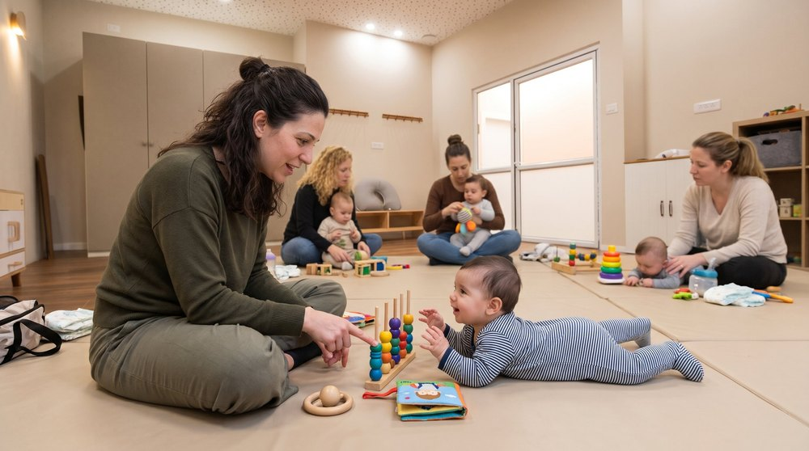

יום חמישי · 10:30–12:30

לגילאי 0–6 חודשים
תקשורת, הדיות ומשחק משותף
כל מבט, חיוך ומשחק קטן – בונים את השפה של מחר
סדנה לאמהות ולתינוקות מלידה ועד גיל 6 חודשים, עם ידע, רעיונות והכוונה מעשית ליצירת תקשורת, הדיות ומשחק משותף עם התינוק.
מה נעשה בסדנה- תקשורתנכיר את הדרכים שבהן התינוק מתקשר, ונלמד להקשיב להן
- הדיותנתרגל תורות של מבט, חיוך וקול שבונים קשר
- משחק משותףנכיר משחקים פשוטים שאפשר לשחק יחד בבית
- תרגול והדגמותנתרגל יחד עם התינוקות, בליווי הדגמות
לקבלת פרטים על הסדנה
או השארת פרטים בטופס
סקויה, קלר 7, חיפה